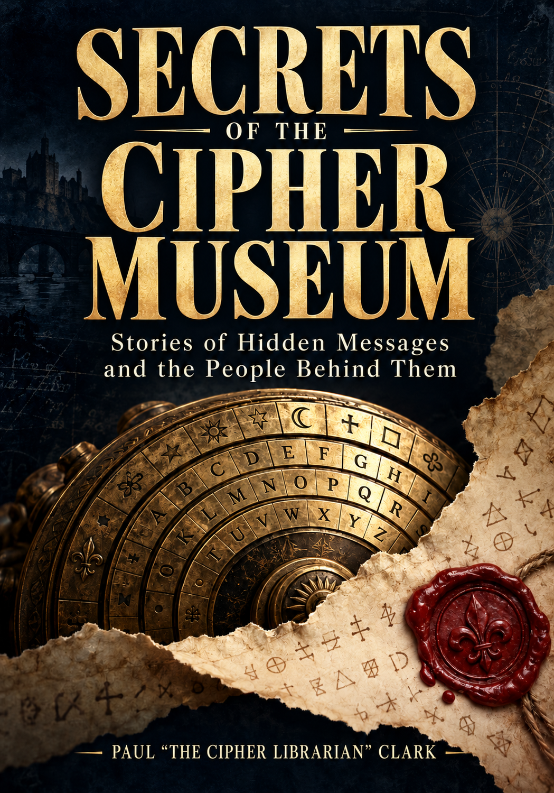

History you can enter
Secrets of the
Cipher Museum
Stories of Hidden Messages
and the People Behind Them
Discover how people learned to read other people’s secrets—and what happened when they did. Then enter Cipher Museum and try the ideas yourself.
Book preview · Publication details to follow

Twenty true investigations
A secret becomes readable.
What happens next?
Unidentified letters in a French archive restore a queen’s voice. A British admiral must reveal a German proposal without exposing his service’s access. A codebreaker reads a smuggler’s orders after the chance to intervene has passed.
Secrets of the Cipher Museum follows hidden messages into the decisions they make possible—and the questions they leave unresolved. The recovery of Copiale in 2011, the Zodiac 340 cipher in 2020 and Mary Stuart’s letters in 2023 brings the story into the work of modern researchers.
No mathematical background is needed. Eight original illustrations help where the method matters. Chapter links and QR codes lead to free exhibits where you can compare readings, test an assumption and inspect what a published recovery establishes. The historical narrative is complete without a browser.
An envelope is waiting for you
The Curator’s Sealed Letter
Four optional slips run through the book. Solve them to open a fictional document investigation in the museum, or start the case directly online. The challenge is not just finding readable words. It is deciding what those words justify.
Open the reader’s mystery →Try it free, with hints. No purchase or account required.
From the prologue · Opening excerpt
The letters without a name
The letters were in the catalogue. The queen was not.
Among the manuscripts preserved by the Bibliothèque nationale de France were pages covered in cipher. Their descriptions offered little help. Nearby material concerned Italian affairs in the early sixteenth century. The encrypted pages had no clear signature or heading to announce that they belonged to another country, another generation and one of Europe's most closely watched prisoners.
George Lasry, Norbert Biermann and Satoshi Tomokiyo began with those unidentified marks. They were looking for historical ciphers to decipher, without knowing whose secrets they had found. An Italian reading seemed worth trying. It did not work. French began to yield recognisable fragments.
The fragments changed the investigation. References to people and affairs pointed towards Mary Stuart and Michel de Castelnau, the French ambassador in England. What had looked like anonymous dispatches was becoming a correspondence from captivity.
But a famous name could make an attractive reading more dangerous. If the researchers were right, they had recovered a major historical source. If they were wrong, the importance of the apparent discovery would do nothing to repair their key. More readable French would help. So would something that had survived independently of their own reconstruction.
In British archives, seven of the letters had another life. Plaintext copies had reached the government that watched Mary. Those copies could now be placed beside the new decipherments. Readers separated by centuries had approached the same correspondence for different purposes: one group to learn what a captive queen was doing, the other to recover what history had lost.
Their texts could be compared. Agreement would test the modern reading. Differences might reveal what a copyist had left out.
When the researchers published their findings in 2023, the collection amounted to fifty-seven documents and roughly fifty thousand words. Most were letters from Mary to Castelnau, written years before the Babington conspiracy that would lead to her execution. The recovery opened a longer view of her captivity, with negotiations still in progress and possible futures still being considered.
Reading the letters did not bring those futures back. It brought back decisions that had been obscured by their outcome. Mary could again be encountered trying to obtain help, assess an ally or keep a channel open, rather than appearing only at the end of the story, betrayed by a fatal message.
Reading the message opens the investigation.
Excerpt © 2026 Paul “The Cipher Librarian” Clark. The prologue draws on George Lasry, Norbert Biermann and Satoshi Tomokiyo’s 2023 study of Mary Stuart’s recovered letters. It follows their published account; no scene or dialogue has been invented. This is an excerpt from the prologue. Chapter 20 follows the full recovery and what the letters reveal.
Explore the recovered letters →For libraries, classrooms and curious friends
Read. Compare. Discuss.
A simple 30–45 minute session: read the opening excerpt together, try the first two slips, then use the online hints to complete the letter. Decode the dispatch, compare the four initial documents, and choose a fifth source before discussing the accusation.
- What can a catalogue description tell you—and how could a reading overturn it?
- What changes when the same message survives in two versions?
- Which statement in the fictional case is an observation, and which is an inference?
- What one additional source would most improve your confidence?
The online activity is free to use without accounts. Participants can work individually or in pairs. No previous codebreaking experience is required.
Start the group activity →